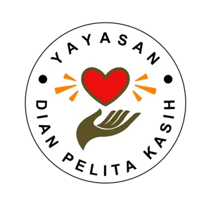

Keberadaan Sekolah MBBN lahir dari panggilan hati yang mendalam. Visinya bermula dari kepedulian Gereja Morning Star Indonesia (kini Every Nation Jakarta) terhadap pendidikan bagi masyarakat pra-sejahtera, yang kemudian ditangkap dan dikerjakan oleh Ibu Odilia Zulkarnaen.
Sebelum terjun ke dunia pendidikan, Ibu Odilia melayani di panti rehabilitasi narkoba. Di sana beliau melihat kenyataan pahit: banyak yang telah pulih secara rohani, namun tubuhnya sudah rusak parah sehingga tak lama kemudian berpulang, meninggalkan anak-anak yang tumbuh tanpa figur orang tua.
Dari pergumulan itu lahir keyakinan yang kuat: daripada merampas mereka saat sudah hancur oleh narkoba, lebih baik merampas mereka sejak usia dini melalui pendidikan. Inilah alasan Ibu Odilia memberikan hidupnya untuk memperlengkapi anak-anak melalui pendidikan Alkitabiah dan pembentukan karakter.
Lebih dari sekadar sekolah, MBBN berkembang menjadi pusat pelatihan bagi para pendidik dari berbagai daerah di Indonesia, sekaligus tempat persemaian: beberapa guru yang pernah melayani di sini diutus kembali ke daerah asal atau merintis sekolah baru di tempat TUHAN memanggil mereka.
“Selamatkanlah mereka dengan jalan merampas mereka dari api.”YUDAS 1:23
Ayat yang menjadi landasan pelayanan dan budaya Sekolah MBBN hingga hari ini.
“Menghormati TUHAN dengan membangun bangsa melalui pendidikan yang berpusat kepada Kristus.”
Kita percaya semua kebenaran berasal dari TUHAN, sehingga Kristus bukan sekadar bagian dari kurikulum, melainkan pusat dari setiap ilmu pengetahuan dan aktivitas yang kita ajarkan.
Kita percaya anak-anak pra-sejahtera memiliki hak yang sama untuk mendapat pendidikan yang benar dan berpusat pada Kristus, sehingga cara pandang mereka dapat diubah dan diperbarui.
Kita percaya Firman TUHAN adalah standar kebenaran mutlak bagi murid untuk menilai segala sesuatu dan mengambil keputusan.
Kita percaya belajar bukan beban yang harus dipikul, melainkan semangat yang harus ditumbuhkan, sehingga murid mencapai potensi yang TUHAN berikan.
Kita percaya orang tua adalah pendidik utama yang ditetapkan TUHAN. Sekolah berperan sebagai mitra strategis agar tujuan pendidikan anak tercapai.
Kita percaya setiap pendidik harus terus diperlengkapi untuk mendidik berdasarkan nilai Kristiani dan standar kompetensi yang unggul.
Bagi Sekolah MBBN, melayani berarti upaya aktif menarik generasi muda keluar dari pengaruh dunia yang merusak dan menempatkan mereka kembali pada rancangan TUHAN yang semula, melalui dua pilar utama.
Melalui pendidikan berbasis Firman TUHAN, murid diasah untuk mahir memilih yang benar di tengah dunia yang membingungkan. Kami memberikan “pegangan” yang benar dalam mengambil keputusan.
“Firman-Mu itu pelita bagi kakiku dan terang bagi jalanku.” Mazmur 119:105
Murid dilatih setiap hari lewat materi karakter dan petunjuk keputusan nyata, agar memiliki daya tahan rohani dan kepekaan nurani, tidak mudah terbakar oleh arus zaman, dan berdiri teguh sebagai pemenang.
Ditanamkan dan dilatih setiap hari kepada murid melalui materi karakter dan keputusan nyata.

Yayasan nirlaba yang diprakarsai aktivis Kristen dari berbagai gereja, dipersatukan oleh panggilan untuk melanjutkan visi Sekolah MBBN. Namanya mencerminkan kerinduan untuk dipakai sebagai alat (dian) oleh TUHAN, untuk menjamah (pelita) komunitas dengan esensi TUHAN sendiri (kasih).
Visi yayasan: membangun generasi yang takut akan TUHAN dan berkarakter melalui pendidikan.
Secara rohani, Sekolah MBBN berada di bawah naungan GSJA Jakarta Central Assembly (JCA). Tudung rohani ini melindungi komunitas sekolah dari pengaruh ajaran yang menyimpang.
“Taatilah pemimpin-pemimpinmu… sebab mereka berjaga-jaga atas jiwamu.” Ibrani 13:17